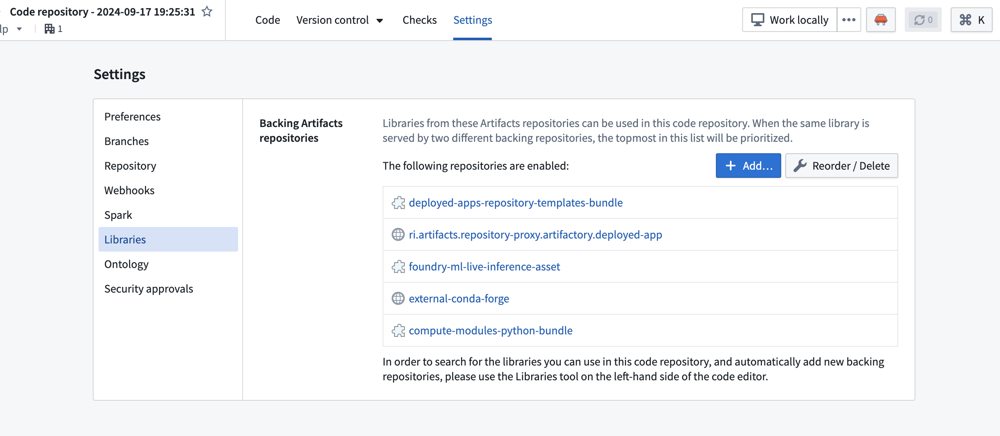
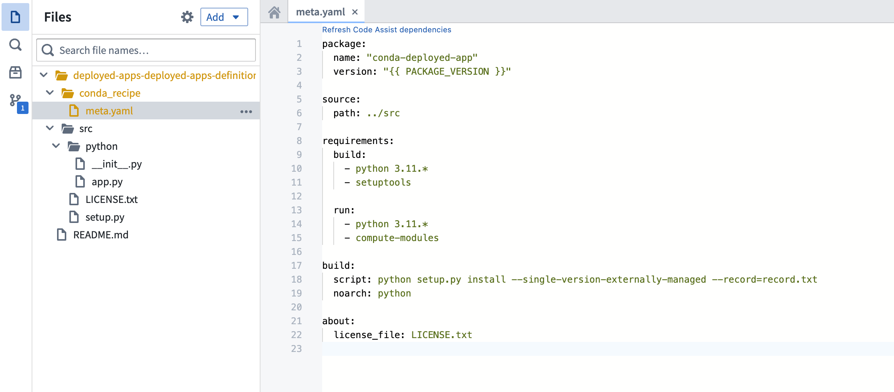
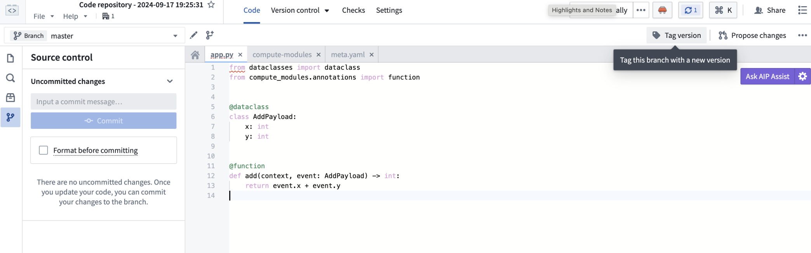

To get started with compute modules, you can use your preferred developer environment. In a few minutes, you will be able to create and deploy a compute module and test it in Foundry.
In Foundry, choose a folder and select + New > Compute Module, then follow the steps in the dialog to start with an empty compute-module backed function or pipeline. Follow the documentation below for next steps depending on your execution mode, or, for a more seamless experience, select the Documentation tab within your compute module to follow along with in-platform guidance.
Compute modules support multiple languages through open-source SDKs. Choose the language that best fits your team and use case:
com.palantir.computemodules:lib dependency.:::callout{theme="neutral"} Review the following SDK guides for detailed API documentation, authentication patterns, type systems, and code examples:
@function decorator, typed functions, streaming, authentication, OSDK integration, and loggingComputeModule builder, type definitions, authentication, OSDK integration, and loggingIf you prefer to create your own client or implement your compute module in another language not supported by the SDKs, review the documentation on how to implement the custom compute module client.
Prerequisites:
Dockerfile in the directory.Dockerfile:```dockerfile tab="Python"
FROM --platform=linux/amd64 python:3.12
COPY requirements.txt . RUN pip install -r requirements.txt COPY src .
USER 5000 CMD ["python", "app.py"]
```dockerfile tab="Java"
# Build stage
FROM --platform=linux/amd64 gradle:jdk21 AS build
COPY . /home/gradle/src
WORKDIR /home/gradle/src
RUN gradle shadowJar --no-daemon
# Run stage
FROM --platform=linux/amd64 eclipse-temurin:21-jre-alpine
RUN mkdir /app
COPY --from=build /home/gradle/src/build/libs/*.jar /app/app.jar
# USER is required to be non-root and numeric for running compute modules in Foundry
USER 5000
CMD ["java", "-jar", "/app/app.jar"]
```dockerfile tab="Node.js"
FROM --platform=linux/amd64 node:18-alpine
WORKDIR /app COPY package.json package-lock.json ./ RUN npm ci --production COPY src .
USER 5000 CMD ["node", "index.js"]
4. Create the dependency file for your language:
```text tab="Python"
# requirements.txt
foundry-compute-modules
```groovy tab="Java" // build.gradle plugins { id 'java' id 'com.gradleup.shadow' version '9.4.1' }
repositories { mavenCentral() }
dependencies { implementation 'com.palantir.computemodules:lib:0.6.0' }
jar { manifest { attributes 'Main-Class': 'com.example.App' } }
```json tab="Node.js"
{
"name": "my-compute-module",
"version": "1.0.0",
"dependencies": {
"@palantir/compute-module": "^0.2.12"
}
}
```text tab="Python" MyComputeModule âââ Dockerfile âââ requirements.txt âââ src âââ app.py
```text tab="Java"
MyComputeModule
âââ Dockerfile
âââ build.gradle
âââ src
âââ main
âââ java
âââ com
âââ example
âââ App.java
```text tab="Node.js" MyComputeModule âââ Dockerfile âââ package.json âââ src âââ index.js
6. Inside your application file, copy and paste the following code:
```python tab="Python"
from compute_modules.annotations import function
@function
def add(context, event):
return str(event['x'] + event['y'])
@function
def hello(context, event):
return 'Hello' + event['name']
```java tab="Java" package com.example;
import com.palantir.computemodules.ComputeModule; import com.palantir.computemodules.functions.Context;
public class App { public static void main(String[] args) { ComputeModule.builder() .add(App::add, AddEvent.class, Integer.class, "add") .add(App::hello, HelloEvent.class, String.class, "hello") .build() .start(); }
record AddEvent(int x, int y) {}
record HelloEvent(String name) {}
static Integer add(Context context, AddEvent event) {
return event.x() + event.y();
}
static String hello(Context context, HelloEvent event) {
return "Hello, " + event.name();
}
}
```javascript tab="Node.js"
const { ComputeModule } = require("@palantir/compute-module");
const computeModule = new ComputeModule();
computeModule.register("add", (context, event) => {
return String(event.x + event.y);
});
computeModule.register("hello", (context, event) => {
return "Hello" + event.name;
});
computeModule.start();
:::callout{theme="neutral"} Learn how to add type inference and automatically register a compute module function with the function registry. :::
:::callout{theme="neutral" title="Typed Python example"} For production use, consider using typed inputs and outputs with the Python SDK. This enables automatic schema inference and function registration:
from dataclasses import dataclass
from typing import TypedDict
from compute_modules.annotations import function
class HelloInput(TypedDict):
planet: str
@dataclass
class AddPayload:
x: int
y: int
@function
def hello(context, event: HelloInput) -> str:
return "Hello " + event["planet"] + "!"
@function
def add(context, event: AddPayload) -> int:
return event.x + event.y
Review the documentation on automatic function schema inference for more details on supported type patterns. :::
When working with compute module functions, your function will always receive two parameters: event objects and context objects.
Context object: An object parameter containing metadata and credentials that your function may need. Examples include user tokens, source credentials, and other necessary data. For example, if your function needs to call the OSDK to get an Ontology object, the context object includes the necessary token for the user to access that Ontology object.
Event object: An object parameter containing the data that your function will process. Includes all parameters passed to the function, such as x and y in the add function, and name in the hello function. In Python, this is a dict; in Java, this is a JSON node object; in Node.js, this is a plain JavaScript object.
:::callout{theme="warning"} If you use static typing for the event/return object, the library will convert the payload/result into that statically-typed object. Review documentation on automatic function schema inference for more information. :::
:::callout{theme="warning"} The function result will be wired as a JSON blob, so be sure the function is able to be serialized into JSON. :::
Now, you can publish your code to Foundry using an Artifact repository, which will be used to store your Docker images.
As an alternative to developing locally, you can build a Python compute module directly within the Foundry platform using Code Repositories. This approach provides an integrated development experience with built-in version control, dependency management, and container image publishing.
The code repository will be pre-configured with the necessary project structure for a compute module, including a src/ directory and default configuration files.
Inside the src/ directory, open the app.py file and define your functions using the @function decorator:
from compute_modules.annotations import function
@function
def add(context, event):
return str(event['x'] + event['y'])
@function
def hello(context, event):
return 'Hello ' + event['name']
For typed inputs and outputs that enable automatic schema inference, use TypedDict or dataclass types as described in the automatic function schema inference documentation.
You can add Python libraries to your compute module code repository in two ways:
meta.yaml: Add dependencies directly in the meta.yaml configuration file in your repository root.

Once your code is ready, tag a version in your code repository to create an image:
0.0.1).
This creates a container image that can be linked to your compute module.
After the compute module is running, you can import your functions:
Your functions are now available to use across the Foundry platform, including in Workshop and Slate applications.
Compute modules can operate as a connector between inputs and outputs of a data pipeline in a containerized environment. In this example, you will build a simple use case with streaming datasets as inputs and outputs to the compute module, define a function that doubles the input data, and write it to the output dataset. You will use notional data to simulate a working data pipeline.
Dockerfile in the directory.Dockerfile:# Change the platform based on your Foundry resource queue
FROM --platform=linux/amd64 python:3.12
COPY requirements.txt .
RUN pip install -r requirements.txt
COPY src .
# USER is required to be non-root and numeric for running compute modules in Foundry
USER 5000
CMD ["python", "app.py"]
requirements.txt. Store your dependencies for your Python application in this file. For example:requests == 2.31.0
src. This is where you will put your Python application.src directory, create a file called app.py.MyComputeModule
âââ Dockerfile
âââ requirements.txt
âââ src
âââ app.py
app.py. This complete example reads from an input stream, doubles the values, writes to an output stream, and repeats every 60 seconds:import os
import json
import time
import requests
# Read the bearer token for input and output access
with open(os.environ['BUILD2_TOKEN']) as f:
bearer_token = f.read()
# Read input and output resource information
with open(os.environ['RESOURCE_ALIAS_MAP']) as f:
resource_alias_map = json.load(f)
input_info = resource_alias_map['identifier you put in the config']
output_info = resource_alias_map['identifier you put in the config']
input_rid = input_info['rid']
input_branch = input_info['branch'] or "master"
output_rid = output_info['rid']
output_branch = output_info['branch'] or "master"
FOUNDRY_URL = "yourenrollment.palantirfoundry.com"
def get_stream_latest_records():
url = f"https://{FOUNDRY_URL}/stream-proxy/api/streams/{input_rid}/branches/{input_branch}/records"
response = requests.get(url, headers={"Authorization": f"Bearer {bearer_token}"})
return response.json()
def process_record(record):
# Assume input stream has schema 'x': Integer
x = record['value']['x']
# Assume output stream has schema 'twice_x': Integer
return {'twice_x': x * 2}
def put_record_to_stream(record):
url = f"https://{FOUNDRY_URL}/stream-proxy/api/streams/{output_rid}/branches/{output_branch}/jsonRecord"
requests.post(url, json=record, headers={"Authorization": f"Bearer {bearer_token}"})
# Run the pipeline autonomously
while True:
records = get_stream_latest_records()
processed_records = list(map(process_record, records))
[put_record_to_stream(record) for record in processed_records]
time.sleep(60)
You can now view the results streamed live in the output dataset.
To interact with inputs and outputs, we provide a bearer token and input/output information.
You can then write code to interact with the inputs and outputs and perform computations. The code snippets provide a simple example of pipelining two stream datasets:
stream-proxy service.Now, you can publish your code to Foundry using an Artifact repository, which will be used to store your Docker images.